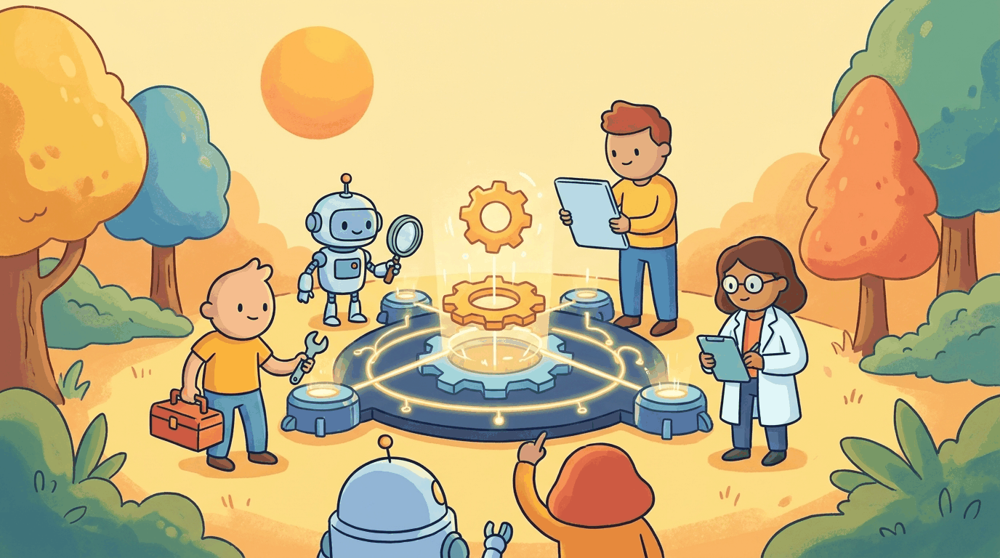

"A jack of all trades is a master of none, but oftentimes better than a master of one."
Agent X, Versatile AI Agent
Chapters 20-22 covered agents as a general pattern. This chapter zooms in on the specializations that actually ship: code agents (Cursor, Claude Code, Devin), browser agents (web navigation, form-filling), research agents (deep research, Open Deep Research), and the benchmarks that measure them (SWE-bench, WebArena, GAIA). The patterns here are the most production-grade in the book.
Chapter Overview
While the preceding chapters cover general agent principles, specialized agents are purpose-built for specific domains and tasks. This chapter surveys the most impactful agent specializations: code generation agents (Claude Code, Cursor, Devin), browser and web agents (Playwright MCP, Stagehand), computer use agents (Anthropic Computer Use, screenshot-based reasoning), and research and data analysis agents.
The chapter also covers domain-specific agent design patterns for healthcare, legal, finance, and customer service, where compliance constraints, safety requirements, and domain knowledge integration demand careful architectural choices. It concludes with a detailed examination of AI-generated code quality, security vulnerabilities, and trust calibration strategies for human-AI collaboration in software engineering.
While Chapters 22 through 24 cover general agent principles, this chapter focuses on domain-specific agent types: coding assistants, research agents, data analysis agents, and more. Understanding specialization patterns helps you design agents that excel at specific tasks rather than being mediocre generalists.
Learning Objectives
- Design code generation agent architectures using self-debugging loops, test-driven development, and SWE-bench evaluation patterns
- Build browser and web agents using Playwright MCP, Stagehand, and WebArena-style task automation
- Implement computer use agents with screenshot-based reasoning, GUI automation, and desktop interaction using Anthropic Computer Use
- Construct research and data analysis agents for literature review, scientific discovery workflows, and data pipeline automation
- Apply domain-specific agent design patterns for healthcare, legal, finance, and customer service with appropriate compliance constraints
- Evaluate AI-generated code quality using static analysis tools (CodeQL, Semgrep, Bandit) and establish trust calibration for code review
Prerequisites
- Chapter 26: AI Agent Foundations (agent architectures, memory, planning)
- Chapter 27: Tool Use, Function Calling & Protocols (function calling, MCP, tool design)
- Chapter 13: LLM APIs (chat completions, streaming, structured outputs)
- Experience building at least one simple agent or tool-calling pipeline
Sections
- 24.1 Code Generation Agents Claude Code, Cursor, Devin, Windsurf. SWE-bench patterns, self-debugging loops, test-driven agent development, and the verification discipline that keeps an LLM-generated codebase from drifting into hallucinated APIs.
- 24.2 Browser & Web Agents Playwright MCP, browser-use, Stagehand. WebArena patterns, headless scraping agents, computer-use models for screenshot-based reasoning, and form automation at scale.
- 24.3 Research & Data Analysis Agents Deep-research agents, data pipeline automation, scientific discovery workflows, literature review agents, and analytical reasoning across structured and unstructured sources.
- 24.4 Code/Work Workflows and Agentic Coding Systems Claude Code, Codex, Cursor, Devin, Copilot Workspace. Agentic coding architectures, CLAUDE.md conventions, background agents, the comparison framework across vendors, and the quality and security audit patterns that keep AI-generated code shippable.
What's Next?
In the next chapter, Chapter 25: Agent Safety and Production, we address the safety, reliability, and observability requirements for deploying agents in production.